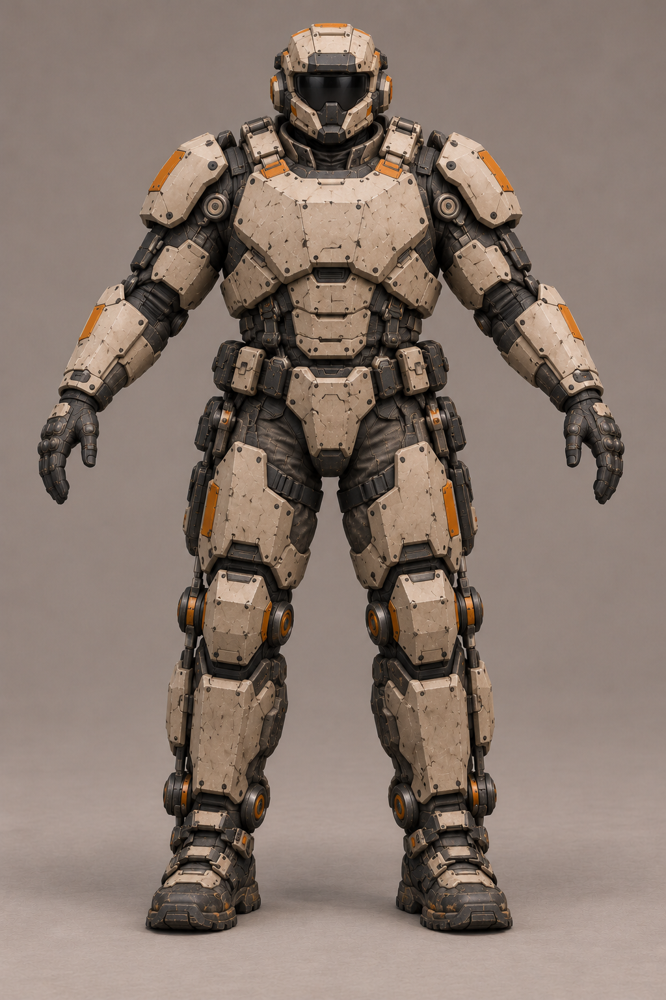
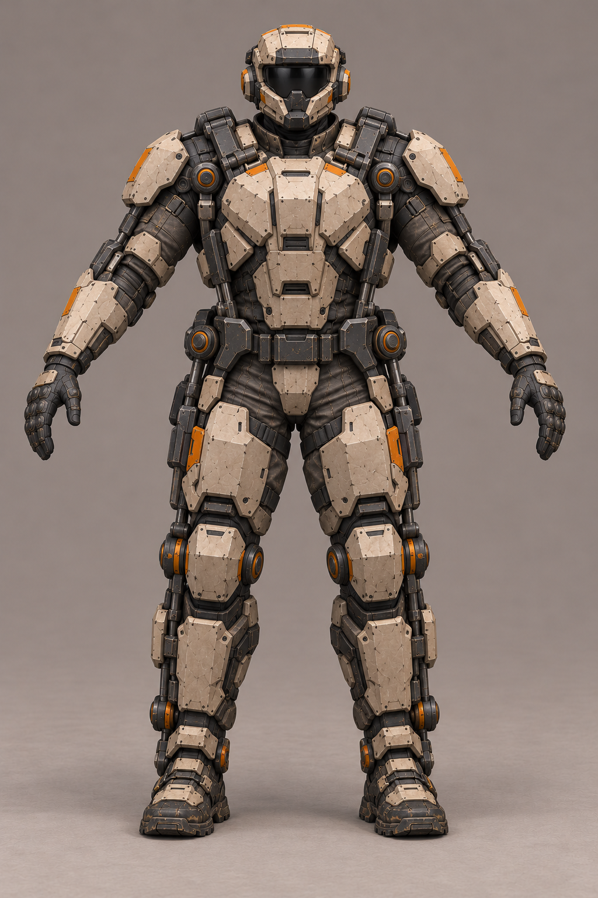
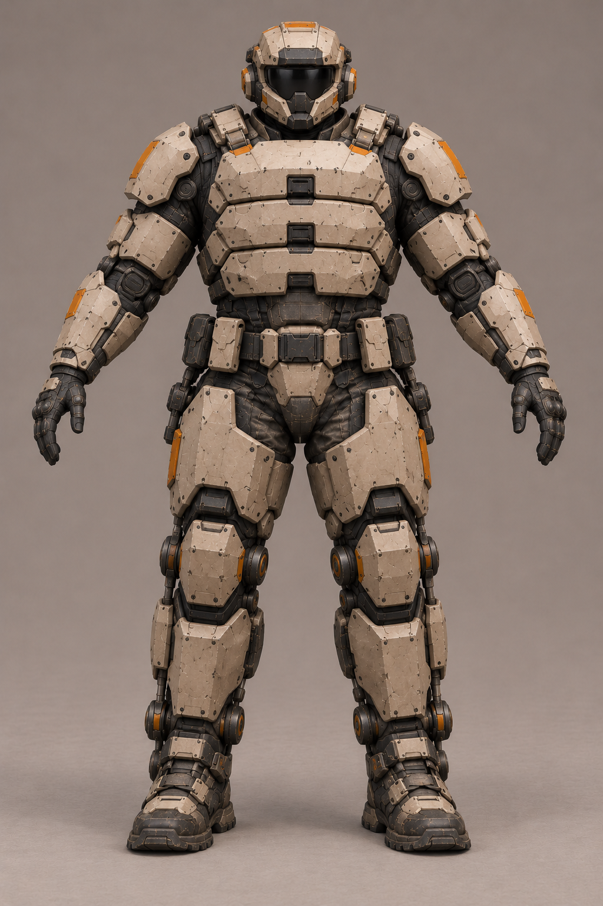

A «Панцирь»Широкая цельная грудная броня, закрытая защита живота и массивные голени на силовом каркасе.
C «Силовая рама»Выраженная внешняя рама от плеч до стоп; броня закреплена внутри каркаса.
D «Тяжёлые секции»Короткий широкий торс с крупными бронесекциями, усиленные бёдра и ступни.